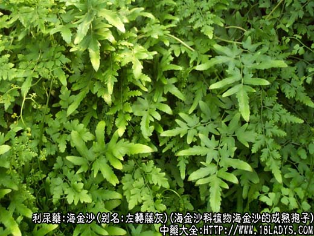
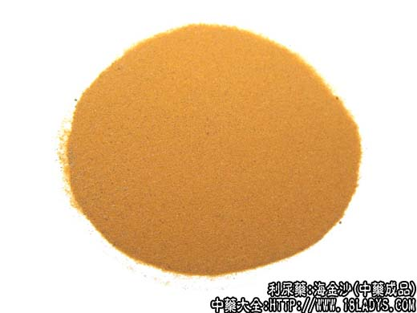
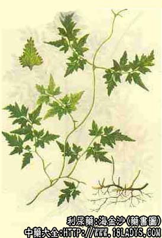

海金沙为常用中药。始载于《嘉祐本草》。
别名：左转藤灰。
来源：为海金沙科植物海金沙的成熟孢子，其草及根茎亦供药用，系野生植物，多生长山坡及山林内。
产地：主产于广东、浙江、江苏、江西等地。
性状鉴别：海金沙为均匀的细微粉末。棕黄色。质极轻，用手捻之有光滑感，置于掌中，可由指缝中滑落；撒在水中则浮于水面，加热后逐渐下沉；易着火燃烧而发爆鸣及闪光，不留灰渣。
以干燥，黄棕色、质轻光滑，能浮于水，无泥沙杂质，引燃时爆响者为佳。
主要成分：含脂肪油。另含一种水溶性成分海金沙素。
功效与作用：海金沙甘淡利尿，寒可清热，其性下降，善清小肠、膀胱湿热，功专利水，为治淋症要药，对热淋茎中痛尤为有效。善渗利之品。多能伤阴，故肾阴虚者慎用。海金沙对金黄色葡萄球菌、绿脓杆菌、福氏痢疾杆菌、伤寒杆菌均有抑制作用。
炮制：筛去茎叶，生用。
性味：甘、寒。
归经：入膀胱、小肠经。
功能：清热解毒，利水通淋。
主治：治尿路感染、尿路结石、白浊、白带、肝炎、肾炎水肿、咽喉肿痛、痄腮、肠炎、痢疾、皮肤湿疹、带状疱疹。
临床应用：用于膀胱湿热、小便短赤、淋沥涩痛之热淋、血淋等，单用有效，或与滑石、甘草等配伍同用。海金沙有消炎退热之功，配大青叶用治感冒发烧，上呼吸道炎症等有较好疗效。
使用注意：1、（《本草逢源》）。“肾脏真阳不足者忌用”。
2、（《本草经硫》）。“小便不利及诸淋由于肾水真阴不足者勿服”。
用量：4~9g；或研末服。
处方举例：（《本草图经》）：治小便不通，脐下满闷，海金沙30g，腊面茶15g。二味捣研令细。每服9g，生姜、甘草汤调下。
附：海金沙草
别名：竹园菜。
来源：同海金沙。药用为其全草。
主要成分：藤含氨基酸、糖类、黄酮甙和酚类。叶含黄酮类。
药理作用：其功效与海金沙同，但更长于清热解毒，除用于小便短赤涩淋痛症外，又可用于痈肿疗毒、腮腺炎、急性肝炎等。
性味：甘寒。
功能：清热解毒，利水通淋。
主治：尿路感染，尿路结石，小便不利，白浊带下，肾炎水肿。湿热黄疸，丹毒等症。
用量：24~30g（鲜品30~90g）；或研末服。外用：煎水洗或捣敷。
处方举例：
1、治热淋急痛（《夷志坚》）。海金沙草研末，生甘草率煎汤，调服6g，或加滑石。
2、治显热黄疸（《广西中药》）。海金沙草、田基黄、鸡骨草各30g，水煎服。
附：海金沙根
别名：铁蜈蚣、铁丝草。
来源：同海金沙。药用其根及根茎。
性味：甘、淡，寒；无毒。
功能：清热解毒，利湿消肿。
主治：肺炎、乙脑、急性胃肠炎，黄疸型肝火，湿热肿满、淋病。
用量：鲜品30~60g。
处方举例：
1、治肺炎（《江西草药》）。海金沙根，马兰根、金银藤、抱石莲（均鲜品）各15g，水煎服。
2、治乙型脑炎（《江西草药》）。海金沙根30g，瓜子金15g，钩藤根15g，金银藤30g，菊花30g，（上述均鲜品）。水煎，加水牛角适量磨汁服。